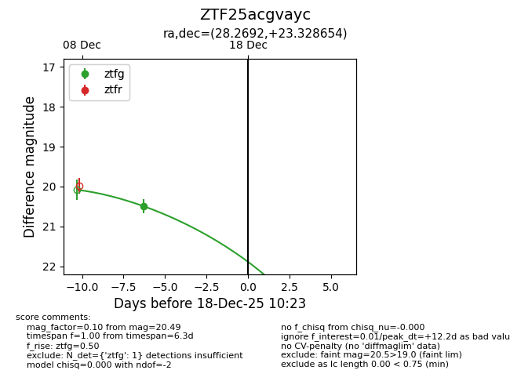
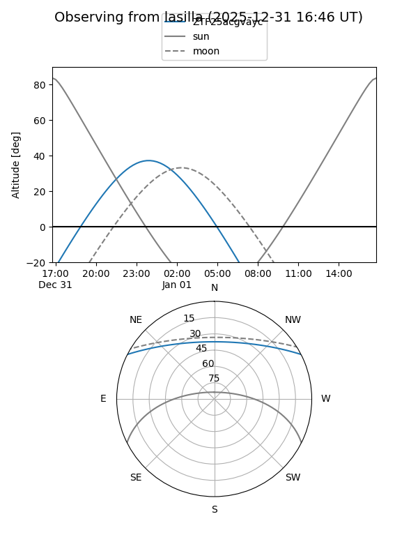
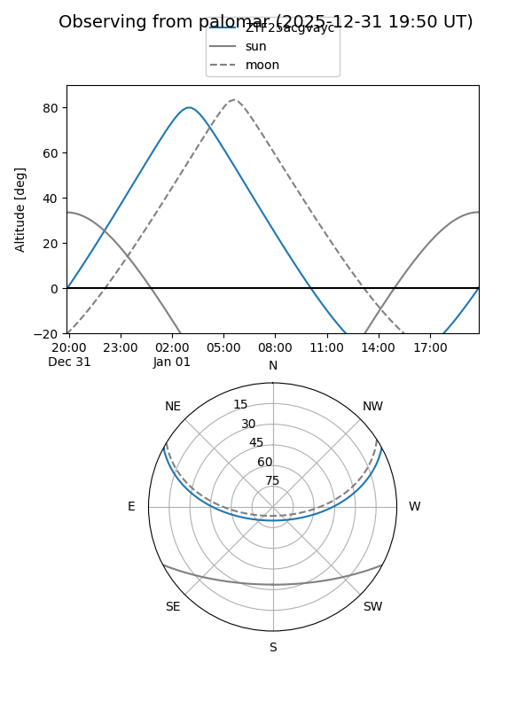

ZTF25acgvayc
Target ZTF25acgvayc at 2026-01-09 12:49
Aliases and brokers:
FINK: link
Lasair: link
ALeRCE: link
alt names
ZTF25acgvayc (ztf,fink_ztf)
Coordinates:
equatorial (ra, dec) = 28.2692,+23.32865
equatorial (HMS+DMS) = 01:53:04.61,+23:19:43.16
galactic (l, b) = (140.8172,-37.39303)
Flags:
Photometry:
last ztfg=20.49
1 ztfg detections
Lightcurve

Visibility


Additional plots